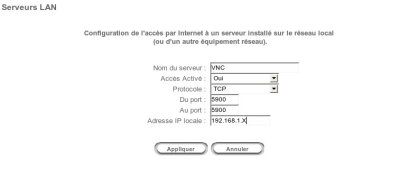

Une de vos connaissances à un problème avec Windows, vous essayez de l'aider depuis maintenant 30 mn, vos nerfs lâchent : "Nooooon ! Cherche Poste de travail !!! PUIS VA SUR TON DISQUE DUR !... Rha !"
Que faire ?! :magicien: Je sais pas si j'vous dis... Bon allez, je suis gentil : on va prendre le contrôle de son PC à distance grâce à VNC.
Citation : Wikipédia
Virtual Network Computing ou VNC est un protocole ouvert pour se connecter à un ordinateur distant. Il permet de transmettre les saisies au clavier ainsi que les clics de souris d'un ordinateur à l'autre, à travers un réseau informatique.
Plus simplement, VNC permet de contrôler un ordinateur à distance. Son paramétrage est très simple, mais la Livebox peut poser quelques problèmes de connexion.
Dans ce tuto vous apprendrez à utiliser VNC, à le configurer, et à rediriger votre IP via un nom de domaine fixe (avec DynDNS).
VNC est entièrement gratuit dans sa version "Free Edition" (d'où le nom :-° ). Si vous le souhaitez, deux versions payantes sont disponibles sur le site officiel.
Choisissez la colonne Free Edition, cliquez sur Download & use, remplissez (ou non) le formulaire qui vient, et téléchargez la version pour Windows Executable.
Installation
Double-cliquez sur le fichier que vous venez de télécharger. L'installation se déroule sans encombre, ne tenez pas compte des cases à cocher, elles sont correctement configurées par défaut.
Si vous limitez l'utilisation de VNC au réseau local, c'est-à-dire uniquement à des ordinateurs connectés via la même Livebox, alors c'est très simple. Sinon, vous allez en baver :pirate: .
Pour le réseau local, pas la peine de lire la prochaine partie, réservée à une utilisation externe.
Utiliser VNC sur l'Internet
Si vous souhaitez utiliser VNC pour contrôler des ordinateurs qui ne partagent pas la même connexion que la vôtre, alors c'est un chouïa plus compliqué.
Acquisition d'une IP locale fixe
Pour commencer, il faut mieux avoir une IP locale fixe, car par défaut elle peut changer et non rester statique comme on le souhaite.
Windows XP propose une interface de gestion des IP très pratique.
Affichez le Statut de votre interface réseau connecté à l'Internet (ici, mon périphérique Wi-Fi).
Sur la fenêtre suivante, cliquez sur Propriétés. Dans la petite liste qui suit, choisissez Protocole Internet(TCP/IP) puis cliquez sur Propriétés.
Votre premier formulaire :D .
Adresse IP : 192.168.1.X X varie entre 2 et 255. Vous pouvez choisir la valeur que vous souhaitez :D ! Je vous conseille une valeur simple, du genre 10-20. Sachez que 192.168.1.1 est déjà prise, car c'est l'adresse de votre Livebox. Exemple d'adresse IP :192.168.1.14 Masque de sous-réseau : 255.255.255.0 Passerelle par défaut : 192.168.1.1 Serveur DNS préféré : 192.168.1.1 Serveur DNS auxiliaire : laissez vide pour "forcer" l'utilisation du DNS préféré (votre Livebox se charge de tout).
Cliquez sur ok, puis essayez de vous connecter sur Google : votre IP locale est fixe, et vous êtes connectés ! Youkaïdi Youkaïda ! :D
Avant de vous ruer sur le programme comme des sauvageons (pas taper :honte: ), on va configurer notre Livebox.
Pour accéder au panneau de configuration de la box, allez sur : http://192.168.1.1.
Si vous n'avez jamais modifié ces informations, les identifiants sont normalement les suivantes (à adapter si vous les avez changées) : Login : admin Pass : admin
Rendez-vous sur l'onglet Serveurs LAN pour configurer les ports de VNC afin de faire la liaison entre le réseau public (l'Internet) et votre poste sur le réseau privé (voilà pourquoi nous avons eu besoin d'adresser une IP fixe).
Configurer les ports de la Livebox
Configurer les ports peut faire peur à première vue : pourtant, c'est enfantin. :D Le port par défaut de VNC est le port 5900. Pour plus de sécurité, je vous conseille de le changer (on verra comment tout à l'heure !).
Bon : trêve de bavardage, on va les configurer ces ports, oui ou non ? :D
Il faut maintenant remplir le formulaire qui arrive. o_O

Nom du serveur : VNC (ce nom est juste indicatif, rien de technique) Accès Activé : Oui (ben si on met non, ça sert à rien, hé, hé :-° ) Protocole : TCP (VNC utilise le protocole TCP, c'est comme ça !) Du port : 5900 Au port : 5900 Adresse IP locale : 192.168.1.X
Vous vous souvenez de tout à l'heure ? Je vous ai fait configurer votre connexion internet pour avoir une IP locale fixe ! Eh bien dans cette case, mettez la même IP que précédemment.
Cliquez sur Appliquez, sauvegardez. Voilà, c'est terminé ! :magicien:
Si vous pensez utiliser votre navigateur web pour contrôler l'ordinateur client, ouvrez le port 5800 en utilisant exactement la même méthode. Je suis gentil, je remplis le formulaire à votre place pour le port 5800 :honte: .
Nom du serveur : VNC_HTTP Accès Activé : Oui Protocole : TCP Du port : 5800 Au port : 5800 Adresse IP locale : 192.168.1.X
Youpi, on peut utiliser VNC sans soucis maintenant :D .
Si VNC ne s'est pas lancé automatiquement après l'installation, lancez-le vous-mêmes à partir d'un des raccourcis créés dans les menus de Windows. Une petit icône VNC apparaît dans la barre de tâches, à côté de l'horloge. Double-cliquez dessus.
No Authentification : vous ne fixez pas de mot de passe, n'importe qui peut se connecter sur votre ordinateur en ayant l'IP et le port de VNC.
VNC password Authentification : vous mettez un mot de passe.
Sur cette fenêtre, vous avez la possibilité de changer les ports de connexion !
Comme promis, voilà comment changer le port par défaut :D ! Vous avez configuré votre Livebox avec les ports 5900 et 5800, soit les ports par défaut.
Pourquoi je me casserais la tête à changer les ports ? :/ Tout simplement parce que les pirates savent très bien que le port par défaut de VNC est 5900. Bon, ok : après, il faut encore trouver le mot de passe... Mais mettre un port pas évident à trouver, c'est une sécurité de plus :D , cela ne vous engage à rien.
Je vous laisse découvrir les autres onglets seuls, ils sont plus "gadgets".
Vient le temps de se connecter :D ! Là encore, la partie va se scinder en 2 : les connexions du réseau local et les connexions externes !
Connexion en réseau
Cherchez sur votre bureau ou dans vos menus le programme : VNC Viewer.
Dans la case server, mettez l'IP du réseau du PC à contrôler (sous la forme 192.168.1.X, vous savez ? :D ), ou bien le nom littéral de l'ordinateur ; enfin, validez. Si vous avez mis un mot de passe précédemment, il vous le demande maintenant ! Sinon, vous devez être connectés :D .
Connexion externe
Cherchez sur votre bureau ou dans vos menus le programme : VNC Viewer.
Dans server, mettez l'adresse IP publique de l'ordinateur à contrôler. On ne parle plus d'IP locale, mais bien d'IP internet !
À la suite de cette adresse IP, rajoutez :5900. On rajoute le port après l'IP, précédé de ':'.
Le tout doit donner quelque chose comme : 88.458.241.25:5900. (L'adresse IP '88.458.241.25' a été prise au hasard.) Faîtes ok. Si vous avez mis un mot de passe précédemment, il vous le demande maintenant ! Sinon, vous devez être connectés. :D
Maintenant, vous souhaitez que quelqu'un contrôle votre PC. Vous allez lui donner votre IP internet, et le port de VNC que vous avez au préalable réglé. En théorie c'est ce qu'il faut faire, mais si vous confiez votre ordinateur souvent à cette personne, voire très souvent, vous devrez lui donner votre IP à chaque fois qu'elle voudra se connecter ! Imaginons que vous débranchiez votre Livebox : une fois redémarrée, votre IP aura changé (normalement). Donc lui donner votre IP, ce n'est VRAIMENT pas pratique.
Et Dieu créa DynDNS !
À quoi sert DynDNS ? o_O
Ce site vous propose de rediriger un nom de domaine sur votre adresse IP : autrement dit, une adresse littérale va remplacer votre truc à 4 nombres. :p Pour l'instant, ça ne vous dit peut-être rien... La pratique vaut mieux qu'un long discours, n'est-ce pas ?
Allez vous inscrire gratuitement sur DynDns.com. Une fois inscrits, connectez-vous.
Identifiez le lien Add Host Services dans le menu de gauche.
Allez ensuite sur : Add Dynamic DNS Host.
Hostname : adresse que vous souhaitez. C'est en tapant cette adresse que votre correspondant pourra se connecter sur votre ordinateur (elle remplace l'IP).
IP Address : ça, c'est l'IP de l'ordinateur qui sera piloté ; ainsi, DynDNS fera le lien entre votre adresse littérale (hostname) et votre adresse numérique.
Le reste, pas la peine d'y toucher. Cliquez sur Add Host pour terminer.
Votre adresse est maintenant créée et configurée (eh oui, déjà ^^ ) !
Oui mais là, elle redirige vers l'IP que j'ai mis dans le formulaire ! Si je change d'IP, il faut que je retourne sur le site DynDNS, et que je mette à jour mon IP ! C'est une perte de temps, ton truc o_O !!
Lâchez ces cailloux, je n'ai pas fini !!! :D Bien sûr, si ça s'arrêtait là, le système n'aurait aucun intérêt ! Mais la Livebox intègre un système très intéressant lié à DynDNS, ce qui nous épargne l'installation d'un programme supplémentaire sur notre ordinateur.
Retournez sur la page d'administration de votre Box, soit http://192.168.1.1.
Dans le menu du haut, là où on a trouvé Serveur LAN tout à l'heure, vous devriez trouver Configuration Avancée... (tout au bout). Magie, le menu a changé. o_O
Passez votre souris sur le menu Réseau puis cliquez sur DynDNS. Tiens, tiens, comme on se retrouve :D .
État du service : Activé Nom du compte : login du compte que vous venez de créer sur DynDNS. Mot de passe du compte : mot de passe du compte que vous venez de créer sur DynDNS. Nom de l'hôte à mettre à jour : hostname que vous venez de créer sur DynDNS (exemple : webpatou.ath.cx).
Bon, c'est bientôt fini ? J'ai pas compris tout ce que tu m'as fait faire, là >_ ..
Ouais c'est fini, je récapitule touuuut !
On a configuré les ports de la Livebox pour permettre à VNC Viewer de se connecter.
Pour cela, on s'est donné une adresse IP locale fixe. Si notre IP locale n'était pas fixe, on devrait mettre à jour les ports à chaque déconnexion de la Livebox, donc peu pratique (même si vous arrivez à aller sur Google).
Après, on a configuré un peu VNC, pour mettre un mot de passe par exemple.
Ensuite, on est allé sur DynDNS, un site qui permet de rediriger une adresse web sur une adresse IP, pour qu'elle soit plus facile à retenir (on retient plus facilement 'monNom.getmyip.com' que '98.578.122.25', non ?).
Pour finir, on a modifié la configuration de la Livebox, pour qu'elle mette à jour toute seule l'adresse IP à rediriger sur DynDNS, sans devoir y aller nous-mêmes en cas de changement !
Ce n'est pas forcément évident au premier abord, mais en pratiquant, on comprend de mieux en mieux tout ça :D ! Bref, si vous êtes arrivés jusqu'au bout sans tout comprendre, sachez que maintenant ça marche.
Et je mets quoi dans la case Server, maintenant que j'ai une adresse web et en plus une adresse IP ?
Ben ça marche pareil qu'avec l'IP.
Avec l'IP, on avait : adresseIp:port. Avec l'adresse Web, on a :adresseWeb:port. Exemple :webpatou.ath.cx:5900
Bien sûr, vous pouvez toujours utiliser une IP pour vous connecter ! L'adresse Web est juste une redirection.
Au moindre problème, n'hésitez pas à m'envoyer un MP ou à demander sur le forum. Et si des possesseurs de Livebox Inventel ont pu se servir du tuto, merci de me le signaler.
{kind=link}